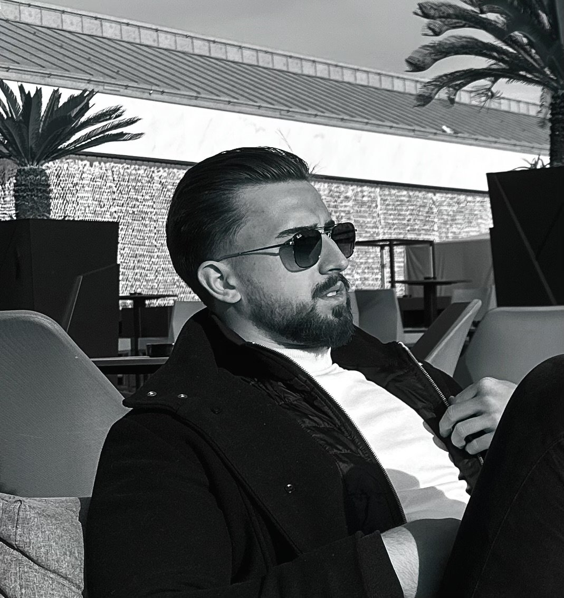

Nejc Feigel Boh
I'm an entrepreneur from Slovenia.
I'm the co-founder and CEO of AIS – AI Slovenia and, through AIS,
a co-owner of its subsidiaries Osmus and AIS Labs. I host the TV show AI brez filtra. I also
run the agency IškaAdventure, and I'm currently co-founding a charitable foundation.

Beginnings
At 17 I founded my first company, the agency NFB Media. At 19 I sold it and devoted myself fully to artificial intelligence in business. That is how AIS came about.
AIS – AI Slovenia is a company in Ljubljana that I co-founded and run as CEO. The leadership team also includes Anej Vučič and our CTO, Ian Veber. We build AI systems, business process automation, SaaS products and custom software for companies.
Our principle is simple: we don't sell tools, we build systems that get the work done. A client doesn't buy a licence or consulting hours from us. They get a system that takes over a specific piece of repetitive work, and a team that keeps that system running afterwards. People in the company keep the judgement, the decisions and the client relationships, and the system takes over the routine.
We work across several areas: document processing and administration, sales and handling enquiries, chatbots and voice agents, internal assistants for staff, market and public tender monitoring, connecting systems such as CRM, ERP and email, and custom applications with access control and an audit trail.
We introduce every system step by step. At first it only reads and learns, then it prepares drafts that a person reviews, and it starts working on its own only once it has proven itself. Every system in a company has a named person who is responsible for it.
One example is a vehicle inspection system at a port. It now takes 2 seconds per vehicle instead of 5 minutes. In the first three months it saved the client 486 hours of work, and the investment paid for itself in two months.
In 2025, after more than a year of development, we presented the AIS systems at the Golden Key conference in Zagreb. By October 2026 AIS had built 12 systems and delivered 9 client projects.
AIS has two subsidiaries, Osmus and AIS Labs, both owned by AIS. As a co-owner of AIS, I also co-own both subsidiaries. More about AIS at ais-slovenia.si.
Osmus
Osmus develops camera systems that connect photographs, video and context so that a person can review them. For each task it defines the whole path: which camera to use (fixed, portable or mounted), how the footage is processed, where AI analysis helps, and what view the operator needs to make the final decision. Proposed applications include vehicle and port inspection, site and perimeter review, and support for search and rescue. More at osmus.si.
AIS Labs is the AIS lab where ideas become working AI products. Here we build and test solutions on real work: document automation, computer vision for capturing and reviewing vehicles, and systems for searching knowledge and documents. Products in development include Sequoia Beaver, a home for a company's work, and Blackhole, a research prototype that follows a question to the evidence. More at ais-lab.si.
AI brez filtra
I host the TV show AI brez filtra (“AI without a filter”). With my guests I talk about how artificial intelligence is changing work in companies: what already works, what doesn't, and where the limits are. More about the show at ai-brez-filtra.si.
IškaAdventure
Besides technology, I run the agency IškaAdventure (spelled ISKAAdventure on its website), which offers adventure and sports experiences in nature around Iška, Ig and the Ljubljana Marshes. I'm also the guide for every activity the agency offers.
The experiences we organise:
- trekking in the Iška Gorge (Iški Vintgar) and its surroundings,
- cycling,
- climbing on the natural rock wall in the Iška Gorge,
- visiting the Mala and Velika Pasica caves at Gornji Ig, with a rope descent and crawling through narrow passages,
- kayaking across the Ljubljana Marshes and along the Iška and Ljubljanica rivers all the way to the centre of Ljubljana,
- helicopter flights from the Podpeč airfield,
- picnics in nature.
Our guests include school groups, colleagues, families, foreign tourists and people who receive an experience as a gift. This is where my work and sport overlap the most.
Charitable foundation
I'm currently co-founding a foundation for charitable purposes. More about it soon.
Sport
I played football professionally for seven years. I've trained in martial arts for more than six years and still do.
Beyond that, I'm drawn most to nature and the mountains. I love climbing, hiking and mountaineering, kayaking and skiing. I play tennis, and for strength I train calisthenics and in the gym.
Frequently asked questions
Who is Nejc Feigel Boh?
A Slovenian entrepreneur, co-founder and CEO of AIS – AI Slovenia in Ljubljana and, through AIS, a co-owner of the subsidiaries Osmus and AIS Labs, host of the TV show AI brez filtra and head of the agency IškaAdventure. He is currently co-founding a charitable foundation. He founded the agency NFB Media at 17 and sold it at 19.
What does AIS – AI Slovenia do?
It builds AI systems, business process automation, SaaS products and custom software for companies across different industries.
What is IškaAdventure?
An agency for adventure and sports experiences around Iška and the Ljubljana Marshes, run by Nejc. He is also the guide for all of its activities.
Does he do sports?
Yes. He played football professionally for seven years and has trained in martial arts for more than six years. He also climbs, plays tennis, does calisthenics and fitness, kayaks, hikes, mountaineers and skis.
Contact
- Emailnejc@ais-slovenia.si
- Instagram@nejc_boh
- X@nejc_boh
- LinkedInNejc Feigel Boh
Links
- ais-slovenia.siAIS – AI Slovenia, AI systems and automation for companies
- ais-lab.siAIS Labs, a subsidiary of AIS
- osmus.siOsmus, a subsidiary of AIS
- ai-brez-filtra.siAI brez filtra, a TV show about artificial intelligence in business
- iskaadventure.siIškaAdventure, adventure and sports experiences